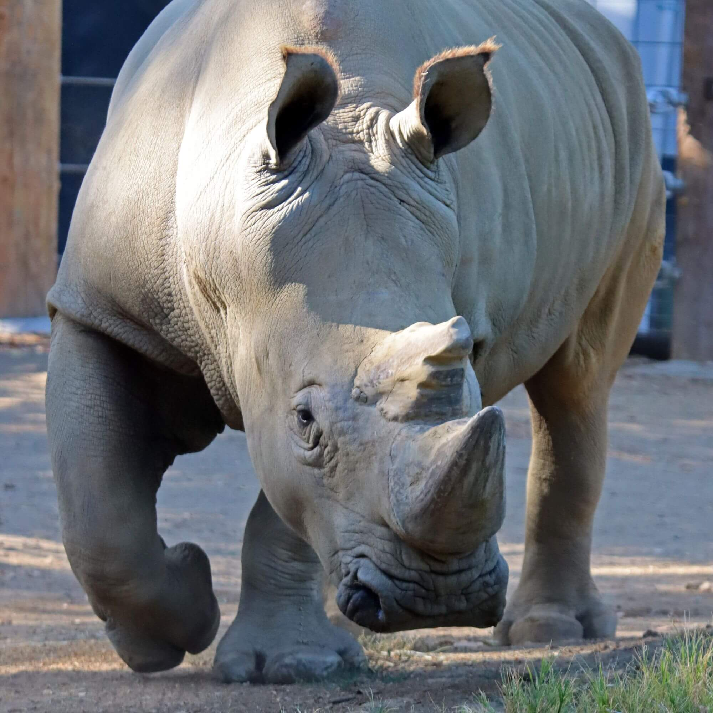
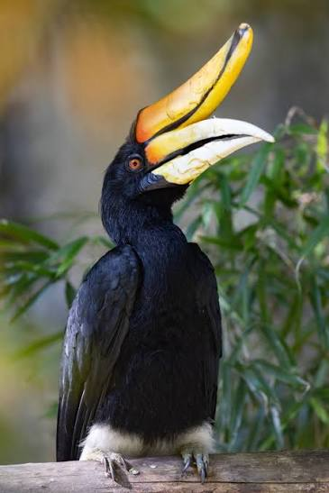

Jacob's Animal Dossiers
example description
Pick an Animal

Southern White Rhino
Southern White Rhinos are apart of a subspecies of White Rhino.
The other being the Nothern White Rhino, though Northern White Rhino's are now extinct.

Sunda Gharial
Sunda Gharial

Nurse Shark

Rhinoceras Hornbill

Southern White Rhino
Southern White Rhinos are apart of a subspecies of White Rhino.
The other being the Nothern White Rhino, though Northern White Rhino's are now extinct.
Sunda Gharial
Sunda Gharial
Nurse Shark
